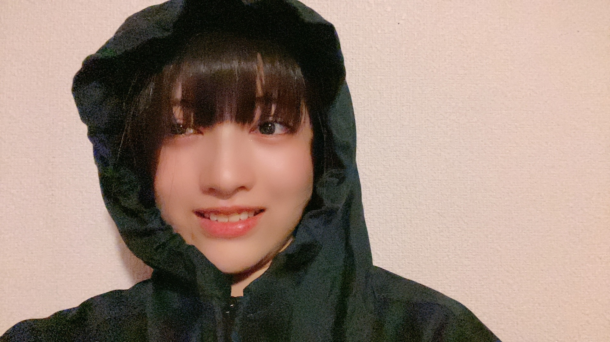

2020/1026Monお疲れ様です。ブログ消えました、林瑠奈です。
乃木坂46、4期生の林瑠奈です。
神奈川県出身高校2年生17歳
華咲くセブンのティーンの林瑠奈です。
負けるなしょげるな林瑠奈、今日も1日頑張るな
(ピンポーン)
昨日、2020年10月25日。
Q 未央奈さんのインスタグラムのストーリー見ました！
瑠奈ちゃんから貰った加湿器を使ってると書いてあったね！
最近の瑠奈ちゃんの活力を教えてください！
A 変わらず推し一択です。
るなぴはついついやってしまうことある？
A ありますね。
Q 例えば、巷で話題の映画や友人からおすすめされた映画など紹介されると興味がなくなり見たくなくなってしまいます、そういう現象って何ていうんですかね...？
A そもそも興味がないんですよ、その映画。
Q るなぴにとってアニソンの定番といえば？？
A わたしにとってというより、この世の全人類共通で『God knows...』じゃないですかね。
『ライオン』、一時期狂ったように歌ってました。
Q 伐採も似合っててよき！ぽんぽんぽーん
A 小林由依さん......？
Q 座右の銘を教えて下さい。
A "しんどいことは分配法則"です。
座右の銘とは少し違いますが、
「友達百人なんてできなくてもいいから、百人分大切にできるような本当の友達を作りなさい。」
『僕は友達が少ない』より三日月夜空ちゃんの母の言葉です。
古文の授業で"その人を夢に見るのは、その人が自分を想ってくれるからだ"と習ったのですがこれはそういうことですか？
住の江の 岸による波 よるさへや
夢のかよひぢ 人めよくらむ
Q いつか一緒に璃果ちゃんの好きな所山手線ゲームやろうね！！！（時間が足りないよ）
A やろう！！でも時間足りないよ！！
かまぼこ5本食べ終わるくらいまでは続くよ！！！
Q 林は匂いで季節わかりますか？？
冬の匂いだ！とか言う人すごく憧れるんだ☺︎
A 「わかりますよ。
まだ冬になりきれていない11月中旬の匂いが1番好きです。
Q 僕は愛想笑いとか人に気使うのが苦手で思ったこととか正直に言ってしまうタイプなのですがそういう人ってどうなんでしょうか
A ご自分ではどう思ってるんですか？
Q 林のこと、ハヤシライスって呼んでもよろしいですか？お許しを貰えると光栄です。
A 快諾します。
Q ♪百万年と二千年前から？
A 愛してません。
質問、コメントありがとうございます。
髪型、好評で嬉しいです。が、誰一人として前髪の変化に気づいておられませんでした。
重くなったんですよ。

ほらもう視界がバーコード。
...........................................................................
明日はミュウちゃんです。
みゆちゃん、前髪アリナシどっちも似合ってます。本心です。疑わないでください。
アディオス！
かしこ
ブログ最後まで書いて一回消えました。泣きそうです。
コメント(187)
瑠奈ちゃんと同じ高校2年生の愛知の覇王です！
さくらちゃんとあやめちゃんと楓さんと同じ愛知県出身だよ！
昨日のノギザカスキッツ見たよ！
レイランドに出ていた瑠奈ちゃん、めっちゃ良かったよ！
何回も見ていて、ハマってるよ！
ノギザカスキッツACT2楽しみに待ってます！
これからもずっと応援するので、頑張ってください！
定番のアニソンですが、『God knows...』なるほどな!!と思いましたｗ 確かに凄い人気ですよね！「ハレ晴レユカイ」も踊れたほど聴いていました(今はうろ覚えですが)
俺自身エヴァ好きもあって「残酷な天使のテーゼ」が好きです!!
「ライオン」も良いですよね！
話が変わってしまいますがワルキューレの「いけないボーダーライン」とか「星間飛行」とかもよく聴いてます！キラッ
まぁただ、F、Δ共にそこまで詳しくはないですが。
やっぱりフードを被ったるなぴも可愛いです！
ピンク色の耳付きフードはまだ着てるんですかね？あのフードを被った姿もまた見てみたいです！
まもなく、10月30日になりますが坂道研修生ツアーでまだ公開していない写真があれば載せてくれませんか？
.......................................................
・質問です
・ツアー直前のSR配信かなにかで聞いたような気がするのですが、振り入れした曲の中で一番大変だった楽曲はなんですか？？
・坂道研修生ツアーのことを少しでもいいので振り返ってみてまた当時のことの感想を聞けたら嬉しいです！
.......................................................
これからも応援しています！
誕生日ケーキを持ったるなぴの写真可愛かったです！
他人？と書かれたTシャツが気になりました。
--∫-- ∫-∫-- ∫∫ # ∫-∫∫∫ ---∫-
Q 掛橋沙耶香さんの保険ポリスとアイスの背徳感はどちらが上ですか？難しい勝負だと思うので、専門家の林瑠奈さんのご意見を伺いたいです。ちなみに私は、動かないでーのところが特に最高だと思っています。
37回目の更新だね〜〜☺︎
中田花奈さん卒業しちゃったね。
ライブや歌番組での圧巻のパフォーマンス。
指先まで見てしまうような表現力は
本当に好きで、瞬きすら忘れるくらいだった。
1期生の人たちが卒業していくのは寂しいけど
それだけ2.3.4期が頼もしくなってきたって
事だと思うし安心して先輩たちが
卒業していけたら素敵だよね！
今日は白石麻衣さんの卒業コンサート。
この目にしっかり焼き付けて宝物にするね。
るなぴも最初で最後の白石麻衣さんとのライブ。
後悔しないよう自分らしくね！
P.S.ノギザカスキッツ第2弾嬉しすぎます。
アディオス！
ノギザカスキッツ良かったです。
18位「謎のウエイトレス林さん」
自分も１票入れました。
お身体に気をつけて頑張って下さい。
ノギザカスキッツみました!
謎のウェイトレス林さん、個人的にはベスト5でも申し分ないないという感じだったのですが、林さんはどのキャラが一番好きでしたか?
応援してます!
るなぴお疲れ様です！
かなりんも卒業されましたネ。
かなりんのパフォーマンスが好きなメンバーって多いですよネ！
僕もかなりんの歌声もダンスもとても好きでした！
テレビやラジオ、雑誌などのトークの面白さとのギャップというのでしょうか、ライブでのパフォーマンスを見るとその凄さに惹かれてしまうんですよネ(^^)
あわただしく卒業の日を迎えたという印象がありますが、それもまたかなりんらしい終わり方なのかなって思いました。
本当の終わりは自分の中にあるんだと思うからネ(^^)
"いつ終わってもいい"と、そーゆう覚悟をもって過ごしていきたいものです！
いつもたくさんのコメントに、質問に答えてくれてありがとうございます♪
アニソンの定番で『God Knows…』に『ライオン』があがるの分かります！
僕は『ハレ晴れユカイ』です♪
カラオケで入れると、友達が踊ってくれました！
るなぴは知ってます？踊れます？
涼宮ハルヒみたいな子が居たらもっと面白い学校生活になってただろうなぁ(^^)
いよいよまいやんの卒業ライブですネ。
卒業を別れととらえる者もいれば、旅立ちととらえる者もいる。
もう会えなくなると寂しくなるけど、いつかまた会えるという希望もあると思う。
卒業の日に抱える思いは、思い出の数だけあるのでしょうネ。
過ごしてきた時間は少ないですが、ちゃんと想いを伝えてあげて下さいネ！
終わるのってホントに簡単なんですから。
いつも纏まりのない読みにくいコメントで申し訳ないです…
いつも応援してます！
かったんじゃなくて
俺の携帯
前髪の重さだけ
映らないんだよね～
あっ…
なんかスッゴい
鼻､伸びてきたっ…
嘘ついてないのに
鼻､伸びてきたっ…
あっ！あっ！
嘘ついてない
って言ったら
勢い増しだした！
鼻伸びる勢い
増しだした！
しかも鯨に食べられた！！
鯨にお爺さんと一緒に食べられたけど､なんとか脱出して､その後､女神様に人間にしてもらえた！！
夢をありがとうオォールト
キャラデミー賞、見事ランクイン！
「謎のウエイトレス林さん」
おめでとうございます！
入ると思ってました。
もちろん僕も一票入れました。ここに来る人は皆入れてるんじゃないでしょか。それくらい、インパクトありました。
あんな絵にかいたような「脇役」でランクインしたのは林さんだけでしょう。
でも、意味分からなくないです。林の濃いーキャラがランクインさせたのです。キャラデミーですから。
パート２では、主役としてさらに個性的なキャラをたくさん生み出して、林の名をコント界に轟かしてやりましょう。名バイプレーヤー・早川聖来さんの座を（ご本人が恐れている通り）、本当に脅かすかもしれません。
「刹那少女」漆黒のルナの活躍も期待しています。
Adios!
Pedro=Pedro
マウンテンパーカーの林瑠奈さまだいすこ壁|ω-o)ﾟ+. ﾎﾟｯ ♡
まけるなしょげるな林瑠奈♡今日も一日アニメ♡魔女の旅々Σ(=∇=ﾉﾉﾋｨｯｯｰ!!
ノギザカスキッツ#20&ノギスキマチソワカン#20視聴いたしました。時々林瑠奈さま発見いたしましたΣ(･ω･ﾉ)ﾉキャラデミー賞トップ20&さらば賞‼興味深い結果で面白かったです。18位‼謎のウェイトレス林さんが入っておめいじんぐ壁|▽//)ゝﾃﾚﾃﾚ
乃木坂工事中‼視聴いたしました。私服の大天使佐藤璃果さまが語る～林瑠奈さま@もふもふもふトーク感動ぽっぽぽー壁]ω･U ﾆｬ♡
縦笛チャレンジチューリップ♡プロポリスS&お名前かぶちゃやーよ♡クエン酸改B&どっちかマヨっちゃう&名場面はふーんまいやん特集よきよきピーナッツヾ(=ﾟ･ﾟ=)ﾉﾆｬﾝ♡
前髪師匠ぱっつん林瑠奈さまきゃわわうれぴーぽーo(￣◎￣)o ﾊﾞﾌﾞｩ♡
座右の銘は一日一善(:3っ)っ -=三[布団]
ドラマは「どんぶり委員長」「タリオ」「アレックスライダー」秋の新アニメは「トニカクカワイイ」♡オヌヌメ‼ぷらーばですわおほほほほ(o^∀^)
ほんじつも親子丼パワー100万馬力でばいころまる( ;-(ｴ)-)ゞｸﾏ
僕には夢があります。
るなぴの「てへぺろ顔」を拝見することです。
叶うかなぁ～
3・2・1・・・はいっ！
卒業メンバーは辛いよね…
これまでの乃木坂の歴史から生かして頑張ろう
十月は別れの季節。日曜日、中田花奈さんが乃木坂46をご卒業。これまでお疲れさまでした。そしてたくさんの思い出と幸福な時間をありがとうございました。
中田さんの知的聡明さ、幅広い知識趣味、お手本となるパフォーマンス。そういったレガシーが、これからの乃木坂46を担う後輩たちに受け継がれていってほしいと願っています。
今回の質問返しを読んでいて思ったことなど。
僕の座右の銘は「知識は天に飛翔するための翼である」なのですが、もう一つ挙げるとすれば「困難は分割せよ」になるなあと。
季節の匂いは、それぞれに魅力的です。春先のしっとり爽やかな匂い、盛夏のむっとする草いきれの匂い、晩秋の焚き火のような枯れた匂い、真冬の鼻の奥がつんとする透き通った匂い。四季こもごも。
十月は別れの季節。今夜、白石さんの卒業コンサートが幕を開けます。惜別の思いを胸に、それでも前を向いて楽しむ気持ちでライブを観たいと思っています。
ではまたコメントします。夕刻、ライブで再びお目にかかります。
さらばだ、また会おう！（気球に乗って去りぬ〜）
今回もブログ更新ありがとう☺︎
毎回毎回朝から楽しみにしてるんだあ、
推しのブログ本当に幸せです( ◜௰◝ ）
あと、はやしがまた質問返してくれて嬉しい〜
11月中旬、匂いの変化に気付けるように
嗅覚を研ぎ澄まして過ごしますね☺︎
前髪の重くなったの気づかなかったの結構
ショックです私結構すぐ気付くタイプなのに〜
愛が足りひーんでしたね( ；ᵕ； )
しつもん！
私はとても冷え性なのですがはやしは冷え性じゃないですか？
改善法知ってたら教えてください( ；ᵕ； )
最近お菓子作りブームなんだけど、次作るお菓子決めて欲しい☁️！
それにしても終わりは良いですね～
全てからの解放
今､幸せな人からすれば恐怖でしかないのでしょうけど…
私にとっては幸せでしかありません♪
終わりが待ち遠しい
もうすぐハロウィンですな♪
かなさんのパフォーマンス
本当に素敵でしたよね✨
パーカー似合うね(*´∇｀*)
質問返しもありがとう☆
るなぴは面白いなぁ～笑笑
今日は白石さんの卒コンだね..
さみしいけど笑顔で送り出して
あげてくださいね(; ;)
こんにちはっ！
...普段はプライベートなことなど
優先しないのですが...今日だけは...
今日だけは、無理を言って仕事を切り上げて
帰宅いたしました
最高の卒業コンサートになるよう
微力ながら全力で応援しますね
卒業おめでとう、まいやん！
さようなら
そして、ありがとう
いよいよだね...
始まる前から涙が止まらない
まいやん...(´；ω；｀)
ダメだね、笑顔で送り出さなきゃ
最後の勇姿を
この目に焼き付けておきます！
ありがとう、まいやん
さらばさんノギスキで初めて知ったんですけど
このまえ有吉の壁に出てておぉ~って思いました
瑠奈ちゃんは見てますか？有吉の壁。
瑠奈ちゃんは普段どんなテレビ番組みてますか？
ドラマとかバラエティとか、、録画して観たりしますか？
いつか、君が歌ってるの、聴きたい。46時間テレビとか、ね！
４期生は色んな所で出演していたけどその中でも
白石さんと４期生だけで披露した夜明けまで強がらなくてもいい
がとても印象的でした。瑠奈ちゃんは身長があるからスカートを使った踊りがとても映えてましたよ！
白石さんと一緒にパフォーマンスをしてみて何を感じましたか？
アフター配信は時間の都合で出演出来ていなかったのが残念ですが
他で白石さんと素敵な時間を過ごせたことを信じてます…
今日は一日お疲れ様でした！
明日も学校かな？頑張りましょう！
自分も起きれるようにアラームかけまくります笑
またね！
るなちゃん❕❤️❤️❤️❤️❤️笑顔
ジューシーるなちゃんって、呼んでいい〜〜〜❔❤️❤️❤️❤️❤️笑顔
オッケー❕❔❤️❤️❤️❤️❤️笑顔
(＠＾▽゜＠）ゞ❤️❤️❤️
❇️❇️おすまし！⚜️❇️⭐彡
マウンテンパーカー興味出ました、知り合いのMr.パーカーJrさんにおすすめのパーカー聞いてみます
昨日のライブでわりと必死で探したよ。
ひょっとして、学校の国語の先生からですか？
もし、そうだとしたら、ぼくもその学校に入学したいです。
僕は43歳、サラリーマン、妻と子供２人います。
最近乾燥がひどくて指先も唇もカサカサです…
瑠奈ちゃんは大丈夫ですか？
よければおすすめのハンドクリームを教えてください！
参考にしたいです！
今日は実験で久しぶりの大学に向かいます〜
お互い勉強も頑張りましょう！またね！
今回もお疲れ様。いつもありがとう。
座右の銘である、“しんどいことは分配法則”。
二ヶ月前、瑠奈ちゃんのブログでこの言葉を知ってから自分も好きな言葉だよ。LINEの一言にしてる。(ちょっとイタイ奴)
今回も写真ありがとう。マウパ似合ってるよ！
明日のブログ更新も期待してるな！
お互い体調管理に気をつけて過ごそう。
アディオス！！！！！！！！
かしこ
p.s.
視界のバーコードを読み取ると何のサイトに飛ぶの？
卒コン、本当にお疲れ様。夜明けで瑠璃が抜かれた瞬間、
(´Д｀)ﾊｧ…←コレ
になった。本当に素敵なカットだった。ありがとう。
明日はハロウィンであり、研修生ツアー大阪公演２日目から一年だね！
満月でもあり、ハロウィンと満月が揃うのは、
実に“46”年ぶりなんだって！
ロマンティックまんげつ♪、だよね！w(くだらな…)
瑠奈ちゃんの仮装、気になるなぁ… てへ//
オリジナリティが満載です♪
オリジナリティーーーーーーっ！！
んナリティィィーーーーーーーーーーーーーーーーーーーーーーーーーーーーーーーーーーーーーーーーーーーーーーーーーーーーーーーーーーーーーーーーーーーーーーーーーーーーーーーーーーーーーーーーーーーーーーーーーーーーーーーーーーーーっ！！！！！！
チャァオ〜〜〜!☆彡
可愛い〜〜〜⤴️⤴️⤴️
可愛い〜〜〜⤴️⤴️⤴️・・
るなちゃん❕❤️❤️❤️❤️❤️笑顔
るなピッピッって、呼ばせてねぇ〜〜⤴️⤴️⤴️❤️❤️❤️❤️❤️笑顔❤️❤️❤️❤️❤️笑顔❤️❤️❤️❤️❤️
❤️❤️(＠＾▽゜＠）ゞ❤️❤️
❇️❇️おすまし！⚜️❇️⭐彡
フード被った自撮り見ると、SR審査の頃を思い出すなあ！
では、白目やってください！！((←
『God knows...』ってアニソンの名曲って思ってしまう、、！(名曲という単語で終わらせていいのかよく分からぬぬ)
るなちゃんの座右の銘！！
◎しんどいことは分配法則
好きな言葉！！
◎ 友達百人なんてできなくてもいいから、百人分大切にできるような本当の友達を作りなさい。
私もココロに響いた、、（ ; ; ）これからがんばろう…
ブログ消えちゃったのは悲しいなあ…それでもブログ届けてくれてありがとう！！！！本当にお疲れ様だよ、！
では、
アディオス！！
ファン歓喜！
コメントする

PROFILE
新4期生リレー
202104
| SUN | MON | TUE | WED | THU | FRI | SAT |
|---|---|---|---|---|---|---|
| 1 | 2 | 3 | ||||
| 4 | 5 | 6 | 7 | 8 | 9 | 10 |
| 11 | 12 | 13 | 14 | 15 | 16 | 17 |
| 18 | 19 | 20 | 21 | 22 | 23 | 24 |
| 25 | 26 | 27 | 28 | 29 | 30 | |

明日は『乃木坂の白石麻衣』さんとの最後のお仕事ですね。
その背中をしっかりと目に焼き付けて、悔いの無いようにお別れしてきてくださいね。
そして、中田さんや白石さん、さらには今までの卒業生の方たちが乃木坂を任せても大丈夫だと思われるアイドルに成長していってくださいね。
きっと林さんはそんなアイドルになれると、うしは勝手に思っていますよ。
では、また何かあったらコメントさせていただきますね。m(_ _)m